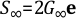
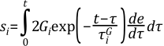
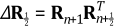

A material is said to be viscoelastic if the material has an elastic (recoverable) part as well as a viscous (nonrecoverable) part. Upon application of a load, the elastic deformation is instantaneous while the viscous part occurs over time.
The viscoelastic model usually depicts the deformation behavior of glass or glass-like materials and may simulate cooling and heating sequences of such material. These materials at high temperatures turn into viscous fluids and at low temperatures behave as solids. Further, the material is restricted to be thermorheologically simple (TRS), which assumes the material response to a load at a high temperature over a short duration is identical to that at a lower temperature but over a longer duration. The material model is available with elements LINK180, SHELL181, PLANE182, PLANE183, SOLID185, SOLID186, SOLID187, BEAM188, BEAM189, SOLSH190, SHELL208, SHELL209, REINF264, REINF265, SOLID272, SOLID273, SHELL281, SOLID285, PIPE288, PIPE289, and ELBOW290 for small-deformation and large-deformation viscoelasticity.
The following topics related to viscoelasticity are available:
In this section, the constitutive equations and the numerical integration scheme for small strain viscoelasticity are discussed. Large-strain viscoelasticity is presented in Large-Deformation Viscoelasticity.
A material is viscoelastic if its stress response consists of an elastic part and viscous part. Upon application of a load, the elastic response is instantaneous while the viscous part occurs over time. Generally, the stress function of a viscoelastic material is given in an integral form. Within the context of small strain theory, the constitutive equation for an isotropic viscoelastic material can be written as:
(4–272) |
where:
| σ = Cauchy stress |
| e = deviatoric part of the strain |
| Δ = volumetric part of the strain |
| G(t) = shear relaxation kernel function |
| K(t) = bulk relaxation kernel function |
| t = current time |
| τ = past time |
| I = unit tensor |
For the elements LINK180, SHELL181, PLANE182, PLANE183, SOLID185, SOLID186, SOLID187, BEAM188, SOLSH190, SHELL208, SHELL209, REINF264, REINF265, SOLID272, SOLID273, SHELL281, SOLID285, PIPE288, PIPE289, and ELBOW290, the kernel functions are represented in terms of Prony series, which assumes that:
(4–273) |
(4–274) |
where:
 , Gi = shear elastic moduli , Gi = shear elastic moduli |
| , Ki = bulk elastic moduli |
 , ,
 = relaxation times for each Prony component = relaxation times for each Prony component |
Introducing the relative moduli:
(4–275) |
(4–276) |
where:
The kernel functions can be equivalently expressed as:
 | (4–277) |
The integral function Equation 4–272 can recover
the elastic behavior at the limits of very slow
and very fast load. Here, G0 and
K0 are, respectively, the shear
and bulk moduli at the fast load limit (i.e. the
instantaneous moduli), and
and
 are the moduli at the slow limit. The elasticity
parameters input correspond to those of the fast
load limit. Moreover by admitting Equation 4–273, the deviatoric and volumetric parts of the
stress are assumed to follow different relaxation behavior. The number
of Prony terms for shear nG and for volumetric behavior nK need not be the same, nor do the relaxation times
and
.
are the moduli at the slow limit. The elasticity
parameters input correspond to those of the fast
load limit. Moreover by admitting Equation 4–273, the deviatoric and volumetric parts of the
stress are assumed to follow different relaxation behavior. The number
of Prony terms for shear nG and for volumetric behavior nK need not be the same, nor do the relaxation times
and
.
The Prony representation has a prevailing physical meaning in that it corresponds to the solution of the classical differential model (the parallel Maxwell model) of viscoelasticity. This physical rooting is the key to understand the extension of the above constitutive equations to large-deformation cases as well as the appearance of the time-scaling law (for example, pseudo time) at the presence of time-dependent viscous parameters.
To perform finite element analysis, the integral Equation 4–272 need to be integrated. The integration scheme proposed by Taylor([112]) and subsequently modified by Simo([328]) is adapted. We will delineate the integration procedure for the deviatoric stress. The pressure response can be handled in an analogous way. To integrate the deviatoric part of Equation 4–272, first, break the stress response into components and write:
(4–278) |
where:
| s = deviatoric stress |
|  |
In addition,
 | (4–279) |
One should note that
(4–280) |
where:
| Δt = tn+1 - tn. |
The first term of Equation 4–280 is readily recognized as: .
Using the middle point rule for time integration for the second term, a recursive formula can be obtained as:
(4–281) |
where:
| Δe = en+1 - en. |
Materials viscous property depends strongly on temperature. For example, glass-like materials turn into viscous fluids at high temperatures while behave like solids at low temperatures. In reality, the temperature effects can be complicated. The so called thermorheological simplicity is an assumption based on the observations for many glass-like materials, of which the relaxation curve at high temperature is identical to that at a low temperature if the time is properly scaled (Scherer([327])). In essence, it stipulates that the relaxation times (of all Prony components) obey the scaling law
(4–282) |
Here, A(T, Tr) is called the shift function. Under this assumption (and in conjunction with the differential model), the deviatoric stress function can be shown to take the form
(4–283) |
likewise for the pressure part. Here, notably, the Prony representation still holds with the time t, τ in the integrand being replaced by:

here ξ is called pseudo (or reduced) time. In Equation 4–283,
 is the decay time
at a given temperature.
is the decay time
at a given temperature.
The assumption of thermorheological simplicity allows for not only the prediction of the relaxation time over temperature, but also the simulation of mechanical response under prescribed temperature histories. In the latter situation, A is an implicit function of time t through T = T(t). In either case, the stress equation can be integrated in a manner similar to Equation 4–278. Indeed,
(4–284) |
Using the middle point rule for time integration on Equation 4–284 yields
(4–285) |
where:
Two widely used shift functions, namely the Williams-Landel-Ferry shift function and the Tool-Narayanaswamy shift function, are available. The form of the functions are given in Shift Functions.
Two types of large-deformation viscoelasticity models are implemented: large-deformation small strain, and large-deformation large strain. The first is associated with hypo-type constitutive equations, and the latter is based on hyperelasticity, which includes isotropic and anisotropic hyperelasticity.
For visco-hypoelasticity model, the constitutive equations are formulated in terms of the rotated stress RTσR, here R is the rotation arising from the polar decomposition of the deformation gradient F. Let RTσR = Σ + pI where Σ is the deviatoric part and p is the pressure. It is evident that Σ = RTSR. The stress response function is given by:
(4–286) |
(4–287) |
where:
| d = deviatoric part of the rate of deformation tensor D. |
This stress function is consistent with the generalized differential model in which the stress rate is replaced by Green-Naghdi rate.
To integrate the stress function, one perform the same integration scheme in Equation 4–278 to the rotated stress Equation 4–286 to yield:
(4–288) |
where:
=
rotation tensor arising from the polar decomposition of the middle
point deformation gradient

|
In the actual implementations, the rate of deformation tensor is replaced by the strain increment and we have
(4–289) |
where:
| symm[.] = symmetric part of the tensor. |
From Σ = RTsR and using Equation 4–288 and Equation 4–289, it follows that the deviatoric Cauchy stress is given by
 | (4–290) |
where:
|  |
The pressure response can be integrated in a similar manner and the details are omitted.
Large-strain visco-hyperelasticity is based on the formulation proposed by (Simo([328])), amended here to take into account the viscous volumetric response and the thermorheological simplicity. Simo's formulation is an extension of the small strain theory. Again, the viscoelastic behavior is specified separately by the underlying elasticity and relaxation behavior.
This decomposition of the energy function is consistent with hyperelasticity described in Hyperelasticity.
(4–291) |
where:
| J = det (F) |

|
As is well known, the constitutive equations for hyperelastic material with strain-energy function Φ is given by:
(4–292) |
where:
| S2d = second Piola-Kirchhoff stress tensor |
The true stress can be obtained as:
(4–293) |
Using Equation 4–291 in Equation 4–293 results
(4–294) |
It has been shown elsewhere that is deviatoric, therefore Equation 4–294 already assumes the form of deviatoric/pressure decomposition.
Following Simo([328]) and Holzapfel([329]), the viscoelastic constitutive equations, in terms of the second Piola-Kirchhoff stress, is given by
(4–295) |
Denote
(4–296) |
(4–297) |
and applying the recursive formula to Equation 4–296 and Equation 4–297 yields,
(4–298) |
(4–299) |
The above are the updating formulas used in the implementation. Cauchy stress can be obtained using Equation 4–293.
Large-strain visco-anisotropic hyperelasticity assumes that viscoelastic behavior is isotropic, while the underlying elasticity is anisotropic hyperelasticity. The algorithm is similar to that of viscoelastic hyperelasticity. The strain energy potential is now represented as follows:
(4–300) |
where:
A and B are the two unit constitutive material directions, |A| = 1 and |B| = 1. Further information about the anisotropic hyperelastic potential is available in Anisotropic Hyperelasticity.
ANSYS offers the following forms of the shift function:
The shift function is activated via the TB,SHIFT command. For detailed information, see Viscoelasticity in the Material Reference.
The Williams-Landel-Ferry shift function (Williams [278]) is defined by
(4–301) |
where:
| T = temperature |
| C1, C2, C3 = material parameters |
The Tool-Narayanaswamy shift function (Narayanaswamy [110]) is defined by
(4–302) |
where:
| Tr = material parameter |
| = material parameter |
This extension of the Tool-Narayanaswamy shift function includes a fictive temperature. The shift function is defined by
(4–303) |
where:
| TF = fictive temperature |
| = material parameter |
The fictive temperature is given by
where:
| nf = number of partial fictive temperatures |
| Cfi = fictive temperature relaxation coefficients |
| Tfi = partial fictive temperatures |
An integrator for the partial fictive temperatures (Markovsky [108]) is given by
where:
 = time increment = time increment |
| = temperature relaxation times |
| The superscript 0 represents values from the previous time step. |
The fictive temperature model also modifies the volumetric thermal strain model and gives the incremental thermal strain as
where the glass and liquid coefficients of thermal expansion are given by
The total thermal strain is given by the sum over time of the incremental thermal strains
Other shift functions can be accommodated via the user-provided subroutine UsrShift, described in the Programmer's Reference. The inputs for this subroutine are the user-defined parameters, the current value of time and temperature, their increments, and the current value of user state variables (if any). The outputs from the subroutine are Δξ, Δξ1/2 as well as the current value of user state variables.